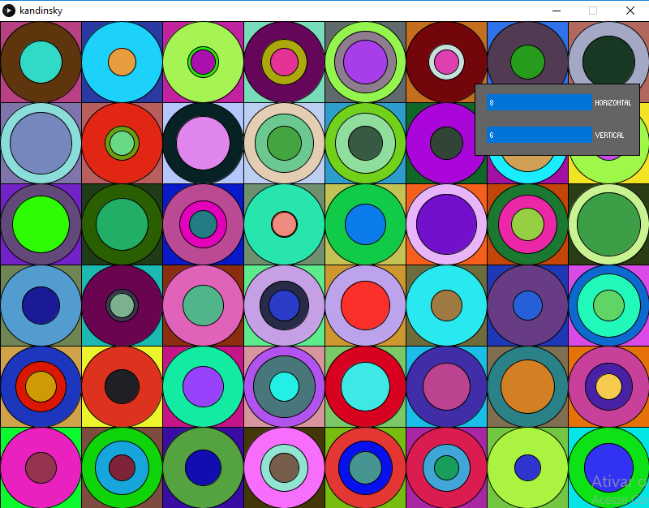

Kandinsky
O Falsificador de Arte
A arte como sabemos é algo bem abstrato, sentimental e subjetiva. Algo difícil para uma máquina reproduzir, porém, nada é impossível.
Um computador só faz a reprodução de comandos. Então se o artista der os comandos certos... será arte?
Na atividade de hoje, iremos reproduzir o quadro de Kandinsky, não perfeitamente é claro, mas como o quadro em questão, Farbstudie Quadrate, é feito de formas geométricas e seguem um certo padrão, podemos desenvolver um algoritmo que faça nossa falsificação! Não sairá idêntico, mas parecido.
Farbstudie Quadrate, 1913, Wassily Kandinsky
Vamos ao código!
- Primeiramente adicionei a biblioteca ControlP5 e a implementei com os controladores Horizontal e Vertical, como pedido no enunciado;
- "Caminhando aos poucos" criei a função circulo que multiplica o valor do raio para ter o diametro;
void circulo(int x, int y, int r){
___ ellipse(x, y, r*2, r*2);
} - criei também a função bloco;
- Testei criar um quadrado e 3 círculos, cada círculo com tamanho menor do que o anterior;
- Depois com um loop de círculos;
- E por fim adicionei os números aleatórios;
void bloco(int x, int y, int l){
___ rect(x, y, l, l);
___ int quantCirculo = (int) random(2, 4);
___ int tamanhoCirculo = l/2;
___ for(int i = 0; i < quantCirculo; i++){
___ ___ circulo(x,y,tamanhoCirculo);
___ ___ tamanhoCirculo = (int) random(15, (tamanhoCirculo - 10));
___ }
} - Adicionei uma função extra de "corAleatoria";
- O próximo passo seria utilizar essas funções em conjunto!
- Pensei em utilizar um loop para os blocos verticais e outro loop para os blocos horizontais na "draw", não deu o resultado esperado, pois a draw executa o código várias vezes;
- Tentei também com as propriedades do ControlP5
.addCallback(new CallbackListener() {
___ public void controlEvent(CallbackEvent event) {
___ ___ if (event.getAction() == ControlP5.ACTION_RELEASED) {
___ ___ ___ kandinskyMethod( horizontal , vertical );
___ ___ }
___ }
}); - Não consegui encontrar um ACTION que se adequasse a necessidade da atividade
- Então utilizei o tradicional e salvador "IF"
int vH = 0;
int vV = 0;
void draw(){
___ if(vH != horizontal || vV != vertical){
___ ___ kandinskyMethod(horizontal, vertical);
___ ___ vH = horizontal;
___ ___ vV = vertical;
___ }
}